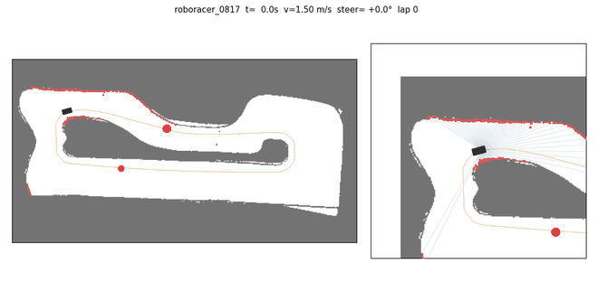

지도 없이 라이다로 달리는 레이싱카 제어기
2026.09 – 2026.10ROBORACER 2026 출전팀, 강화학습 제어기 설계·구현


지도 작성과 위치추정 없이, 라이다·IMU·바퀴속도만 보고 조향과 속도를 바로 내는 신경망을 강화학습으로 만들었습니다. 시뮬레이터에서만 학습한 정책을 Jetson 실차에 올려 주행까지 연결했습니다.
- 40 Hz 비대칭 SAC: 레이싱 라인은 critic만 보고, 실차에 올라가는 actor는 센서만 봅니다.
- 시뮬레이터 직접 구현: 1125빔 라이다(2.5 ms/스캔), 서보·구동 지연, 브레이크 없는 구동계, 센서 노이즈.
- 초파리 hemibrain 커넥톰 배선을 시간 메모리로 쓰는 정책도 비교 실험했습니다.
- 커넥톰 신호 방향 반전, 횡가속을 제한하지 못하던 시뮬레이터 등 결과만 조용히 틀리는 결함 10건 이상을 찾아 고쳤습니다.
시뮬레이터 랩타임 (ifac 트랙, 낮을수록 빠름)
강화학습10.9 s
Pure pursuit11.5 s
Follow-the-Gap18.0 s
실차: 지도 없이 주행에 성공했고, 서보·감속 특성을 실측해 안정성을 높이는 중입니다.